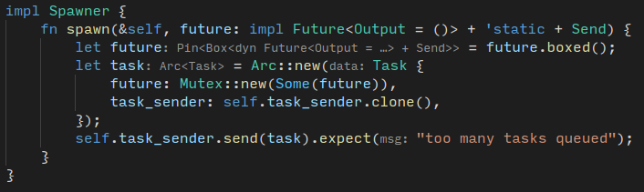

Rust 异步编程
前言
时至今日，我们需要重新思考并发的几个概念。并发，并行，同步，异步，都是什么？由于这些词都是外来词汇，我们还要避免只看字面去猜测它们的本质。parallellism, concurrentcy, synchronyous, asynchonyous.
并行(parallelism)是指多个任务在多个物理 CPU 上同时进行(simultaneously)，通常是指硬件意义上的多任务运行机制，如果计算机只有一个处理器，那就没法并行。并行是指不同的任务在不同的处理上同时运行。并发是指计算机可以同时管理多个任务，但它有多个运行方案，比如在一个失败的方案中，8 个处理器，只有一个在工作，其他在看戏，所有任务在一个处理器上以分时 (time-sharing) 的方式轮流进行。我的理解是，并发是一种抽象，它接受多个任务并承诺以最好的方式执行他们，如果计算机是多处理器，就将任务分摊到多个处理器，如果计算机只有一个处理器，则执行一个任务到一定的时间之后(timeslice), 将当前任务停掉，切换到另一个任务。而并行是一种更严格的定义，要求多个任务在任意时刻 t 必须同时处于运行状态，而且它并不只有多核并行的形式，bit parallelism 是多字节寄存器读少字节指令时发生的并行。在多任务的语境下，并行在意的是多任务是否同时处于“运行”状态，而并发在意的是多任务是否同时处于“已经运行起来”的状态。
但奇怪的是，并行是一个更广泛的概念，有本书叫 Is Parallel Programming that hard, And, If So, What can you do about it?, 用了 Parallel 而不是 Concurrent。另外，有说 a degree of parallelism 的, 却没有说 a degree of concurrency 的。对此我的理解是，parallelism 某些时候已经超越了细节，parallel == simultaneous
异步是指程序可以在运行主流程的时候同时处理其他事件。可以看出异步和并行之间存在一些关系。并行是异步的实现手段。异步是一种要求，主程序必须及时响应任何事件，因为处理其中一个事件，而导致其他事件被搁置，也是不能接受的，所有事件都必须得到无差别对待。
明确这些概念，或至少有些理解之后，接下来详细研究异步。
形式(1)
大部分编程语言, 除了 C/C++(C++20 除外), 都原生地支持这种并发模式, 甚至 HTML 也支持 async 加载 js, 不同语言的异步形式其实一样.
async 标注异步函数的声明, await 标注异步函数的使用
await, 及物动词
wait for (an event).
异步原理
异步的目的是不堵塞, 不一定非要线程. 小型任务使用线程是一种浪费[1], 但不用线程怎么做到多个任务并发?
有三种方法：
- Stackful coroutine
- Combinator: 比如想 Javascript 的 Promise
- Stackless coroutine: 也就是 Rust 的 Future
这篇文章先不探讨这些方法的实现和差异，而是从 Linux 的异步出发，最后到达 Rust 的 Future
Blocking Paradigm
O_NONBLOCK
int setNonblocking(int fd)
{
int flags;
if (-1 == (flags = fcntl(fd, F_GETFL, 0)))
flags = 0;
return fcntl(fd, F_SETFL, flags | O_NONBLOCK);
}
4 种阻塞范式
不阻塞是否等于异步? 不是, 来看 IO 的同步和阻塞的组合[2], 又称阻塞范式(blocking paradigm)
- Synchronous blocking I/O
- 用户程序堵塞到系统调用返回
- Synchronous non-blocking I/O
- 系统调用返回错误(EAGAIN 或 EWOULDBLOCK), 表示任务还没完成
- 之后用户程序需要重新检查任务完成与否, 这种做法导致效率低
- 造成延迟, 因为从内核完成 IO 到用户察觉之间存在一条鸿沟(gap)
- Asynchronous blocking I/O
- = (non-blocking I/O with blocking notification)
- = (non-blocking I/O + blocking
select) - 缺点是
select性能不好, 不过可以用epoll
- Asynchronous non-blocking I/O
- non-blocking I/O, 通过接受信号, 或者 a thread-based callback(?), 完成 I/O
- 重叠(overlap computation and I/O process)
- 可以运行在单一线程
仔细辨别, 可以看出为什么这么命名, 异步与否和文件描述符的属性有关, 阻塞与否和对待文件描述符的方式有关, 如果将文件描述符设置为 O_NONBLOCK , 所在范式就叫 Asynchronous; 如果检查文件描述符的方式是阻塞的, 所在范式就叫 blocking, select 是阻塞的, 因为你需要检查它的返回结果, 这个过程阻塞了同线程的其他操作, 信号是非阻塞的, 因为如果收到信号, 不管当前线程在干什么, 都要停下来(被中断), 信号是一种异步通知机制[3]
Linux AIO[4]
概念:
- I/O readiness event
处理异步事件的方法:
threading(效率太差)- signals
- SIGIO
- 可以设置文件描述符, 让它在完成读写之后发出一个信号, 这样就可以通过 sleep(), pause() 或者 sigsupend() 来等待异步事件发生, 或者继续使用 CPU, 而不需要用 select/epoll, 根据上一节, select/epoll 是阻塞的, 用于 synchronuous non-blocking, 这自然不是不用 select 的理由, 但可以看到 select 之外的选项
- SIGIO 是 edge-triggered, 意味着你需要排空 I/O
- select/poll
- select 有效率问题
- select 可能会被信号打断
- pselect 会屏蔽 (umask) 信号的接收
- select 可以在接受到信号的时候将信号转化成一个 I/O readiness event
- epoll()
posix asynchronous I/O(又称 AIO)- 一个失败的项目
libuv[5]
异步 I/O 库, 用于 node.js, 在 Linux 上基于 epoll(), 使用线程池. 异步虽然反对一个任务开启一个线程, 但实际上并不排除线程. 线程池是更经济的做法.
小结
异步提供了一层不阻塞的多任务接口, 具体实现
- asynchronous blocking, 使用 select/poll/epoll 或者更上层的封装 libuv
- asynchronous non-blocking: SIGIO, signals
形式 (2)
Javascript 是异步编程的代表, 为什么? 暂且不论到底是不是 js 导致异步的出现. JS 只有一条线程, 但又不能让 I/O 阻塞, 所以它把任务交给浏览器[6], 浏览器完成任务后执行回调函数. 或者让浏览器执行回调函数.回调函数有个缺点, 就是造成回调地狱, 遇到参数包含回调函数的接口, 你可能要写一层又一层的回调函数.
2015 年 js 有了 async/await 语法, 用 Promises 表示异步任务, 异步任务处于 2 种状态: 完成和未完成. Promise 和 Rust 的 Future 一样. 不同的是, 对 Future, 你需要手动写 Poll 方法, 即轮询检查. Promise 不需要 Poll, 一切交给浏览器.
Javascript Promise[7][8]
js async 函数返回一个 promise:
async function foo() { return 1; }
解析器将 1 封装成 Promise, 相当于
async function foo() { return Promise.resolve(1); }
Promise 如果就绪, 则通过 then() 使用返回值, 在这个例子里也就是 1
foo().then(
function(value) {
console.log(value);
},
function(error) {
console.log(value);
}
)
foo() 返回的 Promise.resolve(1) 被 then 解封后得出 1, 作为 value 的形参传入第一个函数
另外一个例子: 下载一张图片
fetch(
"https://i0.wp.com/acoup.blog/wp-content/uploads/2021/08/20210813000543_1.jpg?resize=1024%2C576&ssl=1"
)
.then((response) => {
if (!response.ok) {
throw new Error(`HTTP error! status: ${response.status}`);
} else {
return response.blob();
}
})
.then((myBlob) => {
let objectURL = URL.createObjectURL(myBlob);
let image = document.createElement("img");
image.src = objectURL;
document.body.appendChild(image);
})
.catch((e) => {
console.log(
"There has been a problem with your fetch operation: " + e.message
);
});
- 下载图片
- 如果下载失败,
throw[9] - 否则传给下一个
then
- 如果下载失败,
- 增加
<img>节点
可以看出, then() 有两种语法, 实际上是一种[6:1]
p.then(onFulfilled[, onRejected]);
p.then(value => {
// fulfillment
}, reason => {
// rejection
});
术语
- Pending: 处于没完成状态
- Resolved: Promise 已完成并返回, 但不知道是否成功
- 结果
- Fulfilled: 成功
- Rejected: 失败
上面有一句 Promise.resolve(1), 上述术语表明 resolve()[10] 是一个 Promise 主动解析的过程
单从 Javascript 的语法分不清 Promise 是像 window 那样的全局变量还是类. Promise.resolve() 实际上相当于 C++ 的 Promise::resolve()
async/await[11]
上述例子中, 我们没看到 fetch() 是如何实现, 只有知道怎么使用 async/await 才算了解现代异步
第一原则:
- 用
async function声明返回 Promise 的函数 - 用
await等待 Promise, await 所在函数所有语句是同步的,await起到阻塞作用 await阻塞当前指令, 虚拟机或者 CPU 执行到await的时候，马上让出控制权
上一节的下载图片并创建 <img> 的代码可以写成这样
async function myFetch() {
let response = await fetch('coffee.jpg');
if (!response.ok) {
throw new Error(`HTTP error! status: ${response.status}`);
}
let myBlob = await response.blob();
let objectURL = URL.createObjectURL(myBlob);
let image = document.createElement('img');
image.src = objectURL;
document.body.appendChild(image);
}
myFetch()
.catch(e => {
console.log('There has been a problem with your fetch operation: ' + e.message);
});
意图含义都很明显
Rust Future
先看 Future 的定义
#[must_use = "futures do nothing unless you `.await` or poll them"]
#[lang = "future_trait"]
pub trait Future {
type Output;
#[lang = "poll"]
pub fn poll(
self: Pin<&mut Self>,
cx: &mut Context<'_>
) -> Poll<Self::Output>;
}
Attempt to resolve the future to a final value, registering the current task for wakeup if the value is not yet available. (还没说注册到哪去)
This function returns:
- Poll::Pending if the future is not ready yet
- Poll::Ready(val) with the result val of this future if it finished successfully.
Once a future has finished, clients should not poll it again.
When a future is not ready yet,
pollreturnsPoll::Pendingand stores a clone of theWakercopied from the current Context.(Future 是一个 trait, 需要手动实现poll函数) ThisWakeris then woken once the future can make progress. For example, a future waiting for a socket to become readable would call .clone() on theWakerand store it. When a signal arrives elsewhere indicating that the socket is readable,Waker::wakeis called and the socket future’s task is awoken. (Waker::wake()之后唤醒 Future 任务，可以认为Waker是观察者) Once a task has been woken up, it should attempt to poll the future again, which may or may not produce a final value.Note that on multiple calls to poll, only the Waker from the Context passed to the most recent call should be scheduled to receive a wakeup. (？)
大意是, 如果你检查 Future, 如果它处于未完成状态, 则将它注册为待唤醒事件. 又说, 如果它处于未完成状态, 你要将 waker 函数从当前 Context 中克隆一份给它. 当 Future 有进展的时候, 调用 waker, 在 waker 里面操作 Future 封装的事务.
用 Rust 实现一个异步计时器
例子来自 The Rust Async Book
结构
- 用
sync_channel()接口生成一条管道，通道有两头，入口叫SynSender, 出口叫Receiver,SynSender给 Spawner(顾名思义是生成任务的角色),Receiver给 Executor - Spawner 通过
SynSender将任务放入管道中 - 同时, 每个任务都有一个单独的线程在执行任务(睡眠), 执行完之后, 将任务状态标记为完成
- Executor 不断从 Receiver 中获取任务 Task, 发现任务没完成, 就将任务放回管道，如果完成，就不需要放回管道
Reactor 设计模式
关键点:
- multiple inputs
- demultiplexing
- is an implementation of event-driven architecture
- dispatching synchronously
从上面几点, 结合上面的 4 种阻塞模式可以看出 reactor 设计模式属于 asynchronous blocking I/O, asynchronous 是因为不用阻塞型文件描述符， blocking 是因为 event 不是 signal.
机制[12]
- 对每个服务, 提供一个 Event Handler, 处理特定类型的 Event
- 所有 Event Handler 提供相同的接口
- Initiation Dispatcher 通过 Synchronous Event De-multiplexer 等待事件发生
- 事件发生之后, Synchronous Event De-multiplexer 通知 Initiation Dispatcher, 后者同步地调用相应的 Event handler
什么是 Reactor? 准确定义
Reactor = dispatcher, notifier[12:1]
Reactor 实际上是 the source of IO Events
小结
一言概之, reactor 模式就是分发器将任务分发给执行者, 执行者完成之后, 将反馈作为事件发送到事件队列的的一种事件驱动模式,
细节
The Rust Async Book 用 Reactor 模式实现了异步计时器
Spawner 将任务放入管道
// Spawn a task to print before and after waiting on a timer.
spawner.spawn(async {
println!("howdy!");
// Wait for our timer future to complete after two seconds.
TimerFuture::new(Duration::new(2, 0)).await;
println!("done!");
});
用一个 async 匿名函数封装打印函数和实际 timer, async 返回一个 Future
impl Spawner {
fn spawn(&self, future: impl Future<Output = ()> + 'static + Send) {
let future = future.boxed();
let task = Arc::new(Task {
future: Mutex::new(Some(future)),
task_sender: self.task_sender.clone(),
});
self.task_sender.send(task).expect("too many tasks queued");
}
}
- future 随即被固定(
boxed)到堆里面 - 生成一个
taskfuture被锁保护- 每个
task里面有一个task_sender, 是用来把自己发送到任务队列里面去的。
Arc是指Atomic reference counting，将 task 放入堆中并启用 shared ownership- spawner 将
task发送到任务队列
工作线程进入睡眠, 在睡眠状态下获取 waker
TimeFuture::new 开启了一个线程 A，睡眠特定时间，A 从睡眠中醒来之后，将 TimeFuture 的状态改成 completed = true，并调用 waker 的 wake()，但一开始的时候 waker 为空，后续可以看到它的作用。
impl TimerFuture {
pub fn new(duration: Duration) -> Self {
let shared_state = Arc::new(Mutex::new(SharedState {
completed: false,
waker: None,
}));
let thread_shared_state = shared_state.clone();
// https://doc.rust-lang.org/book/ch16-01-threads.html
// move 使你可以将数据从一个线程移入另一个线程
thread::spawn(move || {
// 注意: 线程创建函数立即返回
thread::sleep(duration);
let mut shared_state = thread_shared_state.lock().unwrap();
// 线程还在睡眠的时候, Executor 可能检查了 shared_state 的状态
shared_state.completed = true;
if let Some(waker) = shared_state.waker.take() {
waker.wake()
}
});
TimerFuture { shared_state }
}
}
图：
sequenceDiagram
autonumber
participant main thread
participant executor
participant working thread
main thread->>working thread: spawn that thread
activate working thread
executor->>working thread: check shared_state
working thread->>main thread: timeout
deactivate working thread
线程还在睡眠的时候, Executor 可能检查了 shared_state 的状态, 如果检查到 shared_state 还没完成, 就给它克隆一个 waker
impl Future for TimerFuture {
type Output = ();
fn poll(self: Pin<&mut Self>, cx: &mut Context<'_>) -> Poll<Self::Output> {
// Look at the shared state to see if the timer has already completed.
let mut shared_state = self.shared_state.lock().unwrap();
if shared_state.completed {
Poll::Ready(())
} else {
// Set waker so that the thread can wake up the current task
// when the timer has completed, ensuring that the future is polled
// again and sees that `completed = true`.
//
// It's tempting to do this once rather than repeatedly cloning
// the waker each time. However, the `TimerFuture` can move between
// tasks on the executor, which could cause a stale waker pointing
// to the wrong task, preventing `TimerFuture` from waking up
// correctly.
//
// N.B. it's possible to check for this using the `Waker::will_wake`
// function, but we omit that here to keep things simple.
shared_state.waker = Some(cx.waker().clone());
Poll::Pending
}
}
}
再看一遍代码, sleep -> completed -> waker.wake().
impl TimerFuture {
pub fn new(duration: Duration) -> Self {
let shared_state = Arc::new(Mutex::new(SharedState {
completed: false,
waker: None,
}));
let thread_shared_state = shared_state.clone();
thread::spawn(move || {
thread::sleep(duration);
let mut shared_state = thread_shared_state.lock().unwrap();
shared_state.completed = true;
// 醒来之后执行 waker(), 后者是在 poll 的时候安装上去的
if let Some(waker) = shared_state.waker.take() {
waker.wake()
}
});
TimerFuture { shared_state }
}
}
waker 的由来
# 伪代码
future.waker = task -> context -> waker;
task.future = future;
impl Executor {
fn run(&self) {
// 从 ready_queue 中取出一个任务
while let Ok(task) = self.ready_queue.recv() {
// 从任务队列中取出 future
let mut future_slot = task.future.lock().unwrap();
if let Some(mut future) = future_slot.take() {
let waker = waker_ref(&task);
let context = &mut Context::from_waker(&*waker);
// 根据 context 调用 TaskFuture 的 poll
// 如果任务完成，则返回 Ready
// 否则将当前的 waker 安装到 TaskFuture 中并返回 Pending
if future.as_mut().poll(context).is_pending() {
*future_slot = Some(future);
}
}
}
}
}
关于 context
let waker = waker_ref(&task);
let context = &mut Context::from_waker(&*waker);
waker_ref 的作用是将从 Arc<impl ArcWake> 中返回一个 Waker
注意到 Task 实现了 ArcWake
impl ArcWake for Task {
fn wake_by_ref(arc_self: &Arc<Self>) {
// Implement `wake` by sending this task back onto the task channel
// so that it will be polled again by the executor.
let cloned = arc_self.clone();
arc_self
.task_sender
.send(cloned)
.expect("too many tasks queued");
}
}
Context::from_waker()
Currently,
Contextonly serves to provide access to a&Wakerwhich can be used to wake the current task.
只是适配接口. 现在的问题是, 什么时候调用 Task 的 wake_by_ref()? 查看文档, wake_by_ref() 相当于 C/C++ 的 p_waker->wake()
工作线程从睡眠中醒来之后, 执行 waker.wake(), 也就是调用了 wake_by_ref(), Task 又将自己发送到管道中去. 下一次 Executor 拿到这个 Task , 把 Future 提取出来 poll 的时候, 会发现与之关联的业务已经完成.
impl Future for TimerFuture {
type Output = ();
fn poll(self: Pin<&mut Self>, cx: &mut Context<'_>) -> Poll<Self::Output> {
let mut shared_state = self.shared_state.lock().unwrap();
if shared_state.completed {
println!("{} is done", shared_state.name);
Poll::Ready(())
} else {
println!("{} is pending", shared_state.name);
shared_state.waker = Some(cx.waker().clone());
Poll::Pending
}
}
}
future.as_mut().poll(context) 的时候如果遇到 Poll::Pending, 就会更新 future 本身的状态, 注意 future.poll 的第一个参数是 self, 那么确实需要将 future 放回到原来的 Task 中. 另外还可以看到 future_slot.take() 返回的不是引用, 而是直接将 future 从 future_slot 中移出来了.
if let Some(mut future) = future_slot.take() {
// Create a `LocalWaker` from the task itself
let waker = waker_ref(&task);
let context = &mut Context::from_waker(&*waker);
// `BoxFuture<T>` is a type alias for
// `Pin<Box<dyn Future<Output = T> + Send + 'static>>`.
// We can get a `Pin<&mut dyn Future + Send + 'static>`
// from it by calling the `Pin::as_mut` method.
if let Poll::Pending = future.as_mut().poll(context) {
// We're not done processing the future, so put it
// back in its task to be run again in the future.
*future_slot = Some(future);
}
}
pub fn take(&mut self) -> Option<T>Takes the value out of the option, leaving a None in its place.
Pin
看这本书的第四章, 结论: Pin 是为了防止移动数据, 有一些数据结构有自引用的特征, 移动它们会导致引用失效.
那为什么要 Pin Future?
The first change you'll notice is that our
selftype is no longer&mut Self, but has changed toPin<&mut Self>. We'll talk more about pinning in a later section, but for now know that it allows us to create futures that are immovable. Immovable objects can store pointers between their fields, e.g.struct MyFut { a: i32, ptr_to_a: *const i32 }. Pinning is necessary to enable async/await.
我们知道了 Pin 防止移动, 但是为什么 Future 不可移动, 不是用管道发送 Future 了吗? 当然我们很容易就想到, 不是非要发送 Future 实体, 可以发送引用.
首先我们看 Future 在什么位置:
// Spawn a task to print before and after waiting on a timer.
spawner.spawn(async {
println!("howdy!");
// Wait for our timer future to complete after two seconds.
TimerFuture::new(Duration::new(2, 0)).await;
println!("done!");
});
在栈上. 但在 Spawner::spawn() 中, 它被 boxed() 到堆上, 接着, 被放入 Task 中. 借助 rust-analyzer 可以看到类型.

Arc<Task> 也是堆上的类型, task_sender.send() 只是发送了它的指针, 指针可以随便拷贝, 移动. 没人移动 Task, 也没人移动 Future, 一切安然无恙
结论
Rust 异步编程逻辑：
- 创建工作线程, 在工作线程的末尾挂上钩子函数
waker() - 创建
Future, 通过共享变量关联业务的工作线程, 同时启动工作线程, 并记住以后要通过共享变量来观察工作线程的状态,Future就是观察者 - 创建
Spawner, 生成Task, 将Task发送到消费队列 - 创建 Executor, 从管道中获取 Task, 通过
poll观察工作线程是否结束, 如果结束, 则观察结束. 否则, 用Context封装waker, 并将waker传给共享变量, 工作线程在结束之后, 会提取此函数并执行.
参考
- Faster async functions and promises
- Node Hero – Understanding Async Programming in Node.js
- Tasks, microtasks, queues and schedules
creating a thread for such a small amount of work is quite wasteful. ↩︎
https://en.wikipedia.org/wiki/Signal_(IPC) : A signal is an asynchronous notification ↩︎
http://davmac.org/davpage/linux/async-io.html?utm_source=pocket_mylist ↩︎
https://developer.mozilla.org/zh-CN/docs/Web/JavaScript/Reference/Global_Objects/Promise/then ↩︎ ↩︎
https://developer.mozilla.org/en-US/docs/Web/JavaScript/Reference/Statements/async_function ↩︎
https://developer.mozilla.org/en-US/docs/Learn/JavaScript/Asynchronous/Async_await ↩︎
https://developer.mozilla.org/zh-CN/docs/Web/JavaScript/Reference/Statements/throw ↩︎
https://developer.mozilla.org/en-US/docs/Web/JavaScript/Reference/Global_Objects/Promise/resolve ↩︎
https://developer.mozilla.org/en-US/docs/Learn/JavaScript/Asynchronous/Async_await ↩︎
据说是 Reactor 的最初出处, http://www.dre.vanderbilt.edu/~schmidt/PDF/reactor-siemens.pdf ↩︎ ↩︎